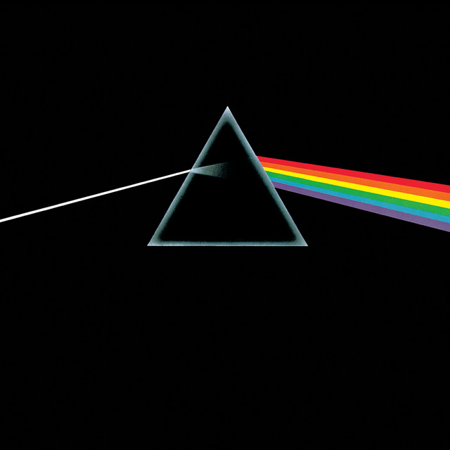

Prisms: A Practical Guide
Read and update one case of a sealed type without an instanceof check and a cast.

- Generate a prism for each case of a sealed interface with
@GeneratePrisms - Match a case with
getOptional, and build the sum type from a case withbuild - Compose a prism with lenses and traversals, and predict whether the result is a
Prism, anAffineor aTraversal - Decide between a prism, an
instanceofcheck and a pattern-matchingswitch
The previous guide demonstrated how a Lens gives us a powerful, composable way to work with "has-a" relationships: a field that is guaranteed to exist within a record.
But what happens when the data doesn't have a guaranteed structure? What if a value can be one of several different types? This is the domain of "is-a" relationships, or sum types, commonly modelled in Java using sealed interface or enum.
For this, we need a different kind of optic: the Prism.
The Scenario: Working with JSON-like Data
A Prism plays the part of an instanceof pattern together with the variant's constructor: getOptional matches one case of a sealed type, and build returns a value of that case as the sealed type. Unlike a pattern, it is a value that composes with other optics, and modify through it changes the value only when the case matches. Choosing an optic sets it beside the other optic types.
Consider a common scenario: modelling a JSON structure. A value can be a string, a number, a boolean, or a nested object.
The Data Model: We can represent this with a sealed interface.
import org.higherkindedj.optics.annotations.GeneratePrisms;
import org.higherkindedj.optics.annotations.GenerateLenses;
import java.util.Map;
@GeneratePrisms // Generates Prisms for each case of the sealed interface
public sealed interface JsonValue {}
public record JsonString(String value) implements JsonValue {}
public record JsonNumber(double value) implements JsonValue {}
public record JsonBoolean(boolean value) implements JsonValue {}
@GenerateLenses // We can still use Lenses on the product types within the sum type
public record JsonObject(Map<String, JsonValue> fields) implements JsonValue {}
Our Goal: We need to safely access and update the value of a JsonString that is deeply nested within another JsonObject. An instanceof and casting approach would be unsafe and verbose. A Lens won't work because a JsonValue might be a JsonNumber, not the JsonObject we expect.
A Step-by-Step Walkthrough
Step 1: Generating the Prisms
Just as with lenses, we annotate our sealed interface with @GeneratePrisms. This automatically creates a companion class (e.g., JsonValuePrisms) with a Prism for each permitted subtype.
// Generated automatically:
// JsonValuePrisms.jsonString() -> Prism<JsonValue, JsonString>
// JsonValuePrisms.jsonNumber() -> Prism<JsonValue, JsonNumber>
// JsonValuePrisms.jsonBoolean() -> Prism<JsonValue, JsonBoolean>
// JsonValuePrisms.jsonObject() -> Prism<JsonValue, JsonObject>
Customising the Generated Package
By default, generated classes are placed in the same package as the annotated type. You can specify a different package using the targetPackage attribute:
// Generated class will be placed in org.example.generated.optics
@GeneratePrisms(targetPackage = "org.example.generated.optics")
public sealed interface JsonValue {}
This is useful when you need to avoid name collisions or organise generated code separately.
Step 2: The Core Prism Operations
A Prism is defined by two unique, failable operations:
getOptional(source): Attempts to focus on the target. It returns anOptionalwhich is non-empty only if thesourcematches the Prism's specific case. This is the safe alternative to aninstanceofcheck and cast.build(value): Constructs the top-level type from a part. This is the reverse operation, used to put a value of the specific case back into the sum type (e.g., taking aJsonStringand returning it as aJsonValue).
Prism<JsonValue, JsonString> jsonStringPrism = JsonValuePrisms.jsonString();
// --- Using getOptional (the safe "cast") ---
Optional<JsonString> result1 = jsonStringPrism.getOptional(new JsonString("hello"));
// -> Optional[JsonString[value=hello]]
Optional<JsonString> result2 = jsonStringPrism.getOptional(new JsonNumber(123));
// -> Optional.empty
// --- Using build (construct the sum type from a part) ---
JsonValue result3 = jsonStringPrism.build(new JsonString("world"));
// -> JsonString[value=world], typed as a JsonValue
The prism picks one case of the sealed type, and every other case passes through it untouched:
JsonValue (sealed) ├─ JsonString ◆ jsonString() ├─ JsonNumber ..... ├─ JsonBoolean .... └─ JsonObject ..... ◆ the case it matches: getOptional gives Optional[JsonString[...]] . any other case: Optional.empty, and modify hands it back as it was
Step 3: Composing Prisms for Deep Access
The true power is composing Prisms with other optics. When a Prism meets a Lens or an Affine, the focus can be missing and nothing can build the whole from it, so the result is an Affine. Two prisms stay a Prism, and anything composed with a Traversal, on either side, is a Traversal.
higher-kinded-j provides direct composition methods that automatically return the correct type:
Lens.andThen(Prism)returnsAffinePrism.andThen(Lens)returnsAffinePrism.andThen(Prism)returnsPrismAffine.andThen(Affine)returnsAffine
See Composition Rules for the complete reference.
// Create all the optics we need
Prism<JsonValue, JsonObject> jsonObjectPrism = JsonValuePrisms.jsonObject();
Prism<JsonValue, JsonString> jsonStringPrism = JsonValuePrisms.jsonString();
Lens<JsonObject, Map<String, JsonValue>> fieldsLens = JsonObjectLenses.fields();
Lens<JsonString, String> valueLens = JsonStringLenses.value();
// Direct composition: Prism.andThen(Lens) = Affine
Affine<JsonValue, String> jsonStringValue =
jsonStringPrism.andThen(valueLens);
// The composed optic: safely navigate from JsonObject -> userLogin field -> name field -> string value
Traversal<JsonObject, String> userNameTraversal =
fieldsLens // JsonObject -> Map<String, JsonValue>
.andThen(Traversals.forMap("userLogin")) // -> JsonValue (if "userLogin" key exists)
.andThen(jsonObjectPrism) // -> JsonObject (if it's an object)
.andThen(fieldsLens) // -> Map<String, JsonValue>
.andThen(Traversals.forMap("name")) // -> JsonValue (if "name" key exists)
.andThen(jsonStringValue); // -> String (if it's a string)
This composed Traversal now represents a safe, deep path that will only succeed if every step in the chain matches.
When to Use Prisms vs Other Approaches
Use Prisms When
- Type-safe variant handling - Working with
sealed interfaceorenumcases - Optional data extraction - You need to safely "try" to get a specific type
- Composable type checking - Building reusable type-safe paths
- Functional pattern matching - Avoiding
instanceofchains
// Perfect for safe type extraction
Optional<String> errorMessage = DomainErrorPrisms.validationError()
.andThen(ValidationErrorLenses.message())
.getOptional(someError);
Use Traditional instanceof When
- One-off type checks - Not building reusable logic
- Imperative control flow - You need if/else branching
- A hot loop you have measured - Production Readiness says what each call allocates
// Sometimes instanceof is clearer for simple cases
String shout(JsonValue jsonValue) {
if (jsonValue instanceof JsonString jsonStr) {
return jsonStr.value().toUpperCase();
}
return "";
}
Use Pattern Matching When
- Exhaustive case handling - You need to handle all variants
- Complex extraction logic - Multiple levels of pattern matching
- Modern codebases - Using recent Java features
// Pattern matching for comprehensive handling
String describe(JsonValue jsonValue) {
return switch (jsonValue) {
case JsonString(var str) -> str.toUpperCase();
case JsonNumber(var num) -> String.valueOf(num);
case JsonBoolean(var bool) -> String.valueOf(bool);
case JsonObject(var fields) -> "Object with " + fields.size() + " fields";
};
}
Common Pitfalls
Don't Do This
// Unsafe: Assuming the cast will succeed
JsonString jsonStr = (JsonString) jsonValue; // Can throw ClassCastException!
// Verbose: Repeated instanceof checks
String nested(JsonValue jsonValue) {
if (jsonValue instanceof JsonObject obj1) {
var userValue = obj1.fields().get("userLogin");
if (userValue instanceof JsonObject obj2) {
var nameValue = obj2.fields().get("name");
if (nameValue instanceof JsonString str) {
return str.value().toUpperCase();
}
}
}
return "";
}
// Inefficient: Creating prisms repeatedly
var name1 = JsonValuePrisms.jsonString().getOptional(value1);
var name2 = JsonValuePrisms.jsonString().getOptional(value2);
var name3 = JsonValuePrisms.jsonString().getOptional(value3);
Do This Instead
// Safe: Use prism's getOptional
Optional<JsonString> maybeJsonStr = JsonValuePrisms.jsonString().getOptional(jsonValue);
// Composable: Build reusable safe paths, one step at a time
var userNamePath = JsonValuePrisms.jsonObject()
.andThen(JsonObjectLenses.fields())
.andThen(Traversals.forMap("userLogin"))
.andThen(JsonValuePrisms.jsonObject());
// ... and on through "name" to the string value
// Efficient: Reuse prisms and composed paths
var stringPrism = JsonValuePrisms.jsonString();
var name1 = stringPrism.getOptional(value1);
var name2 = stringPrism.getOptional(value2);
var name3 = stringPrism.getOptional(value3);
Real-World Example: API Response Handling
Here's a practical example of using prisms to handle different API response types safely:
@GeneratePrisms
public sealed interface ApiResponse {}
public record SuccessResponse(String data, int statusCode) implements ApiResponse {}
public record ErrorResponse(String message, String errorCode) implements ApiResponse {}
public record TimeoutResponse(long timeoutMs) implements ApiResponse {}
public class ApiHandler {
// Reusable prisms for different response types
private static final Prism<ApiResponse, SuccessResponse> SUCCESS =
ApiResponsePrisms.successResponse();
private static final Prism<ApiResponse, ErrorResponse> ERROR =
ApiResponsePrisms.errorResponse();
private static final Prism<ApiResponse, TimeoutResponse> TIMEOUT =
ApiResponsePrisms.timeoutResponse();
public String handleResponse(ApiResponse response) {
// Type-safe extraction and handling
return SUCCESS.getOptional(response)
.map(success -> "Success: " + success.data())
.or(() -> ERROR.getOptional(response)
.map(error -> "Error " + error.errorCode() + ": " + error.message()))
.or(() -> TIMEOUT.getOptional(response)
.map(timeout -> "Request timed out after " + timeout.timeoutMs() + "ms"))
.orElse("Unknown response type");
}
// Use prisms for conditional processing
public boolean isRetryable(ApiResponse response) {
return ERROR.getOptional(response)
.map(error -> "RATE_LIMIT".equals(error.errorCode()) || "TEMPORARY".equals(error.errorCode()))
.or(() -> TIMEOUT.getOptional(response).map(t -> true))
.orElse(false);
}
}
Complete, Runnable Example
This example puts it all together, showing how to use the composed Traversal to perform a safe update.
import static org.higherkindedj.hkt.instances.Witnesses.*;
import static org.higherkindedj.hkt.validated.ValidatedKindHelper.VALIDATED;
import java.util.Map;
import java.util.TreeMap;
import java.util.function.Function;
import org.higherkindedj.hkt.Applicative;
import org.higherkindedj.hkt.Kind;
import org.higherkindedj.hkt.Semigroups;
import org.higherkindedj.hkt.id.Id;
import org.higherkindedj.hkt.id.IdKindHelper;
import org.higherkindedj.hkt.instances.Instances;
import org.higherkindedj.hkt.validated.Validated;
import org.higherkindedj.hkt.validated.ValidatedKind;
import org.higherkindedj.optics.Lens;
import org.higherkindedj.optics.Prism;
import org.higherkindedj.optics.Traversal;
import org.higherkindedj.optics.annotations.GenerateLenses;
import org.higherkindedj.optics.annotations.GeneratePrisms;
import org.higherkindedj.optics.annotations.GenerateTraversals;
import org.higherkindedj.optics.util.Traversals;
/**
* A runnable example demonstrating how to use and compose Prisms to safely access and update data
* within nested sum types (sealed interfaces).
*/
public class PrismUsageExample {
// 1. Define a nested data model with sum types.
@GeneratePrisms
public sealed interface JsonValue {}
@GenerateLenses
public record JsonString(String value) implements JsonValue {}
public record JsonNumber(double value) implements JsonValue {}
@GenerateLenses
@GenerateTraversals // Generates JsonObjectTraversals.fields()
public record JsonObject(Map<String, JsonValue> fields) implements JsonValue {}
public static void main(String[] args) {
// 2. Create an initial, nested JSON-like structure. TreeMap keeps the printed key order stable.
var data =
new JsonObject(
new TreeMap<>(
Map.of(
"user",
new JsonObject(
new TreeMap<>(
Map.of("name", new JsonString("Alice"), "id", new JsonNumber(123)))),
"status",
new JsonString("active"),
"empty_field",
new JsonString(""))));
System.out.println("Original Data: " + data);
System.out.println("------------------------------------------");
// =======================================================================
// SCENARIO 1: Using composed Prisms and Lenses for deep, specific updates
// =======================================================================
System.out.println("--- Scenario 1: Using Composed Traversal for Deep Updates ---");
Prism<JsonValue, JsonObject> jsonObjectPrism = JsonValuePrisms.jsonObject();
Prism<JsonValue, JsonString> jsonStringPrism = JsonValuePrisms.jsonString();
Lens<JsonObject, Map<String, JsonValue>> fieldsLens = JsonObjectLenses.fields();
Lens<JsonString, String> jsonStringValueLens = JsonStringLenses.value();
// Compose the optics to create the full path from the root to the user's name.
Traversal<JsonObject, String> userToJsonName =
fieldsLens
.andThen(Traversals.forMap("user"))
.andThen(jsonObjectPrism)
.andThen(fieldsLens)
.andThen(Traversals.forMap("name"))
.andThen(jsonStringPrism)
.andThen(jsonStringValueLens);
var updatedData =
IdKindHelper.ID
.narrow(
userToJsonName.modifyF(
name -> Id.of(name.toUpperCase()), data, Instances.monad(id())))
.value();
System.out.println("After deep `modify`: " + updatedData);
System.out.println("------------------------------------------");
// =======================================================================
// SCENARIO 2: Using the generated Traversal to operate on all elements
// =======================================================================
System.out.println("--- Scenario 2: Using Generated Traversal to Validate All Fields ---");
Traversal<JsonObject, String> allTopLevelStringValues =
JsonObjectTraversals.fields() // Traverses all values in the `fields` map
.andThen(jsonStringPrism) // Filters for strings
.andThen(jsonStringValueLens); // Gets the string content
Function<String, Kind<ValidatedKind.Witness<String>, String>> checkNonEmpty =
s ->
s.isEmpty()
? VALIDATED.widen(Validated.invalid("A string field was empty"))
: VALIDATED.widen(Validated.valid(s));
Applicative<ValidatedKind.Witness<String>> applicative =
Instances.validated(Semigroups.string("; "));
Kind<ValidatedKind.Witness<String>, JsonObject> validationResult =
allTopLevelStringValues.modifyF(checkNonEmpty, data, applicative);
System.out.println("Validation Result: " + VALIDATED.narrow(validationResult));
}
}
Expected Output:
Original Data: JsonObject[fields={empty_field=JsonString[value=], status=JsonString[value=active], user=JsonObject[fields={id=JsonNumber[value=123.0], name=JsonString[value=Alice]}]}]
------------------------------------------
--- Scenario 1: Using Composed Traversal for Deep Updates ---
After deep `modify`: JsonObject[fields={empty_field=JsonString[value=], status=JsonString[value=active], user=JsonObject[fields={id=JsonNumber[value=123.0], name=JsonString[value=ALICE]}]}]
------------------------------------------
--- Scenario 2: Using Generated Traversal to Validate All Fields ---
Validation Result: Invalid(A string field was empty)
- A prism is a failable focus on one variant:
getOptionalis the safe cast,buildthe constructor back into the sum type Lenshandles the "what",Prismthe "what if": a prism is the type-safeinstanceofplus cast, composable and reusable- Composition tells the truth: a prism in the chain makes the result an
AffineorTraversal, so the possibility of no match is visible in the type - Reuse beats repetition: build prisms and composed paths once and store them as constants; changes to the data model surface as compile errors at the optic, never as runtime surprises
- Prism Toolkit: the full convenience-method catalogue and the
Prismsutility factory methods forOptional,Either,Maybe,Try, and list decomposition - Validated Prisms: when the no needs to carry located, accumulated reasons (a validated boundary)
- Production Readiness: what a prism costs on a miss, and when to cache a composed optic
Once you're comfortable with these prism fundamentals, explore Advanced Prism Patterns for production-ready patterns including:
- Configuration management with layered prism composition
- API response handling with type-safe error recovery
- Data validation pipelines and event processing systems
- State machine implementations and plugin architectures
- Performance optimisation and testing strategies
Prisms integrate with For comprehensions via the match() operation, which provides prism-based pattern matching with short-circuit semantics. When the prism match fails, the computation short-circuits using the monad's zero value (empty list, Nothing, etc.). See For Comprehensions: Pattern Matching with match().
Practise prism basics in Tutorial 03: Prism Basics (9 exercises).
- Monocle: Scala Optics Library - Production-ready Scala optics with extensive examples
- Haskell Lens: Canonical Reference - The original comprehensive optics library
- Lens Tutorial: A Little Lens Starter Tutorial - Beginner-friendly introduction
Previous: Coupled Fields Next: Prism Toolkit